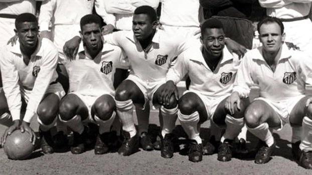
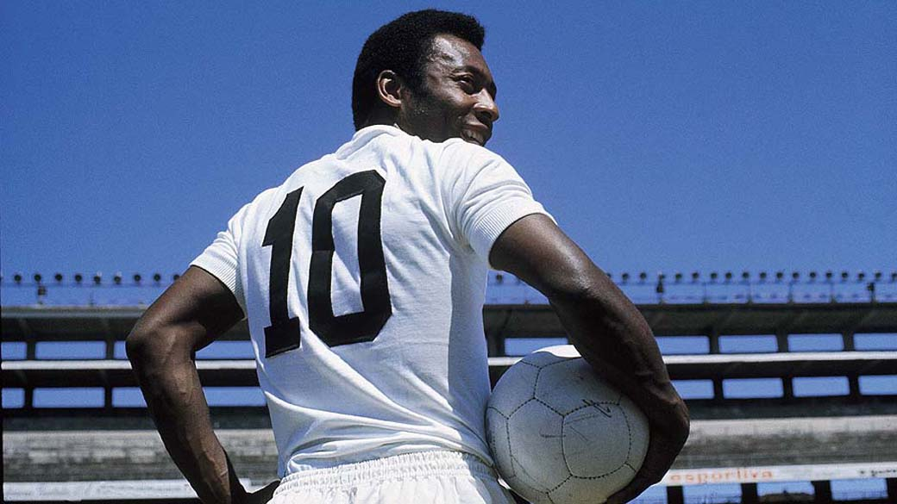
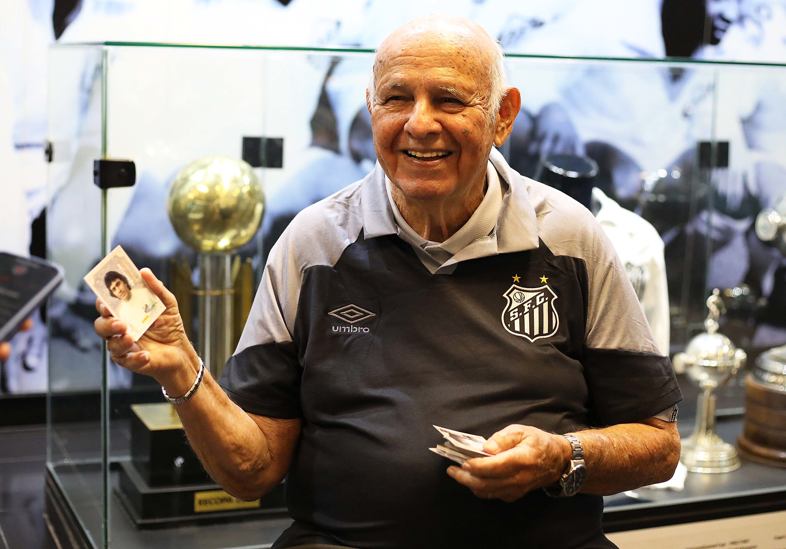

SANTOS FUTEBOL CLUBE
ONDE NASCEU O REI DO FUTEBOL
Nossa História
Fundado em 1912, o Santos Futebol Clube se tornou um dos times mais lendários do mundo. Foi a casa de Pelé, o Rei do Futebol, e palco de grandes conquistas que marcaram gerações.
 Leia MaisNossas Conquistas
Copa Libertadores
1962, 1963, 2011
Mundial Interclubes
1962, 1963
Campeonato Brasileiro
8 títulos (1961, 1962, 1963, 1964, 1965, 1968, 2002, 2004)
Copa do Brasil
2010
Recopa Sul-Americana
2012
Nossos Ídolos
Pelé
O maior jogador de todos os tempos.
Neymar Jr
Um dos maiores talentos revelados pelo Peixão.

Pepe
O Canhão da Vila, maior artilheiro da história do clube.
Nossa Casa
Inaugurado em 1916, a Vila Belmiro é a casa do Santos Futebol Clube e palco de momentos históricos do futebol mundial. Com capacidade para cerca de 16 mil torcedores, o estádio mantém a tradição e a proximidade da torcida com o time.